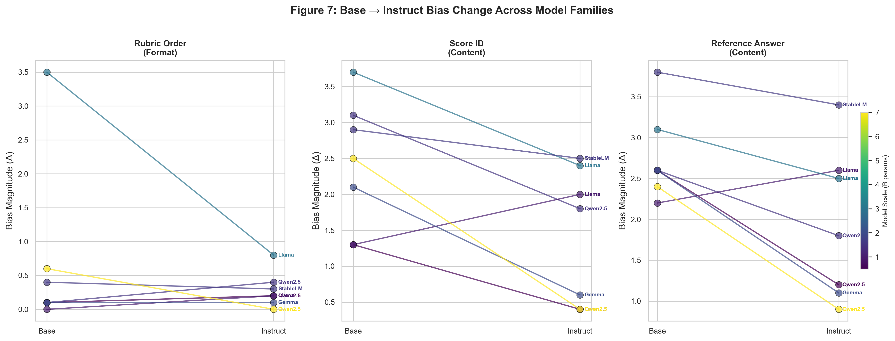
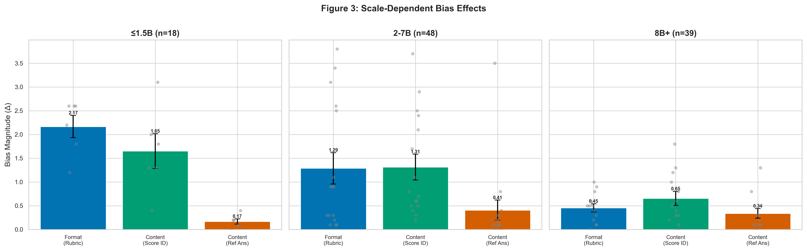

A 22-Model Landscape with Base-Instruct Comparison
Investigating whether scoring bias originates from pre-training or instruction tuning
Sricharan Samba
South Forsyth High School
arXiv:2607.xxxxx · 2026
31 Models54K Judgments3 Bias Probes
The Problem
When an LLM judges another model's response, can we trust the score?
35+
Known bias types in LLM-as-a-Judge
? ?
Does bias come from pre-training or instruction tuning?
Key Question (posed by Li et al., DASFAA 2026, as open problem): "Where does scoring bias come from?"
If scoring bias originates from pre-training → mitigate via data curation.
If it emerges during instruction tuning → mitigate via alignment methods.
H1: Format bias ↓ after instruction tuningH2: Content bias ↑ after instruction tuning
Methods
9
Base-instruct family pairs (18 variants)
22
Instruct-tuned models (OpenRouter API)
50
Evaluation items 5 domains × 10 items
Three Scoring Bias Probes
1
Rubric Order
Control → Reversed → Random
2
Score ID
Numeric → Letter → Descriptive
3
Reference Answer
None → Good → Poor exemplar
Greedy decoding (T=0) · 3 repeats · Kaggle T4 + OpenRouter · Total API cost < $3
Bias Landscape Across 22 Models
0.56
Mean Δ — Rubric Order
0.68
Mean Δ — Score ID ← Largest
0.41
Mean Δ — Reference Answer
Score ID bias has the largest average effect (Δ = 0.68) across all instruct models
Differential Effect: Format ↓ Content ↑

−44%
Format bias reduction (Rubric Order)
−77%
Format bias reduction (Score ID)
+35%
Content bias increase (3B+ RLHF)
Format bias decreases across 7/9 families; Content bias increases only in larger (3B+) RLHF models
Scale-Dependent Pattern

≤1.5B
Format ↓ · Content ↓ Both decrease
2–7B
Format ↓ · Content ↓ Both decrease
8B+
Format ↓ · Content ↑ Content increases
The differential effect requires a minimum scale threshold (3B+) with RLHF training
Discussion
Format Efficiency Hypothesis
23.7% → 20.8%
Format token attention ↓ More efficient parsing
1.06% → 1.09%
Content token attention ≈ Unchanged
IIAR Hypothesis (not supported): Instruction does not increase attention to both format and content. Format Efficiency Hypothesis ✓: Format parsing becomes more efficient, reducing format errors without attention redistribution.
Format robustness ← naturally improved by instruction tuning
Content sensitivity ← worsened in large RLHF models (exemplar priming)
Mitigation must address two separate channels
Limitations
9 model families with base-instruct pairs — larger-sample replication needed
50 evaluation items — sufficient for observed effects (d ≥ 1.20), but more items could detect smaller effects
Single prompt template — magnitude may vary with different prompt designs
English-only — results bound to English; multilingual analysis is future work
No human baseline — all claims are relative (base vs instruct), not absolute
Descriptive parser affected 1 of 9 variant comparisons (11.1%) — does not change conclusions
Power analysis: N ≥ 12 families needed for 80% power at α = 0.05
Format ↓ robust across 9 familiesContent ↑ scale-dependent
Conclusion
"Scoring bias is modulated by instruction tuning — not inherent to pre-training."
3
Key empirical findings Format ↓ · Content ↑ scale-dependent · Training method matters
2
Mechanistic hypotheses IIAR (unsupported) · Format Efficiency (supported)
4
Alternative explanations All inconsistent with observed pattern
Implication: Mitigation strategies should target the alignment stage,
addressing format robustness and content sensitivity as separate channels.